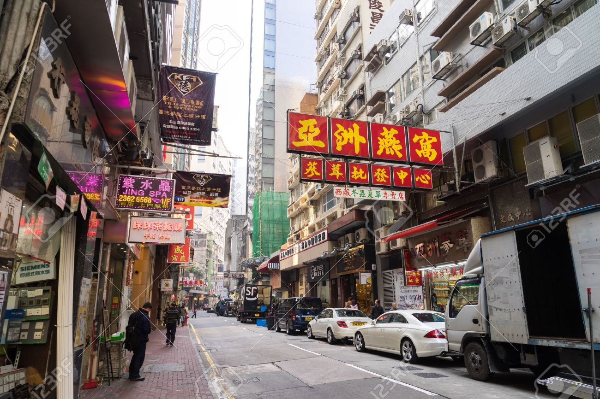

홍콩 · 구룡반도
네온사인과 인파의 거리, 몽콕
몽콕은 세계에서 인구 밀도가 가장 높은 지역 중 하나로, 빽빽한 네온사인과 노점, 시장이 어우러진 홍콩 특유의 활기를 보여줍니다. 분주한 거리 자체가 홍콩 영화의 단골 배경입니다.
재래시장과 골목 풍경이 영화 속 홍콩의 일상을 그대로 담고 있어, 도시 감성 여행지로 인기가 많습니다.
이 지역에서 촬영된 영화
아비정전 (1990)
왕가위 감독의 작품으로, 몽콕 일대의 거리와 건물이 1960년대 홍콩의 분위기를 재현하는 배경으로 등장합니다.
열혈남아 (1988)
몽콕의 번화한 거리와 좁은 골목이 인물들의 거친 삶을 그리는 무대가 됩니다.
근처 명소
여인가 (Ladies' Market)
의류·잡화 노점이 끝없이 늘어선 재래시장. 홍콩 거리 정서의 정수.
금붕어 거리
관상어 가게가 모인 이색 거리. 영화 속에 자주 등장하는 풍경.
랭함 플레이스
몽콕의 현대적 쇼핑몰. 옛 거리와 대비되는 도시의 또 다른 얼굴.
주변 맛집
로컬
일낙 (一樂燒鵝)
미슐랭에 오른 거위 구이 맛집. 합리적 가격의 별미.
디저트
감로방 (甘露坊)
전통 홍콩식 디저트로 유명한 가게.
분식
몽콕 어묵 노점
거리에서 즐기는 홍콩식 어묵과 길거리 음식.